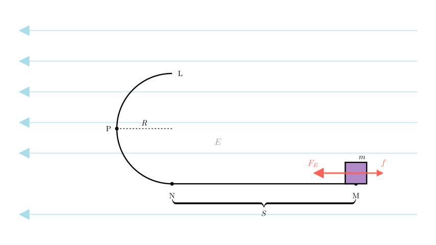
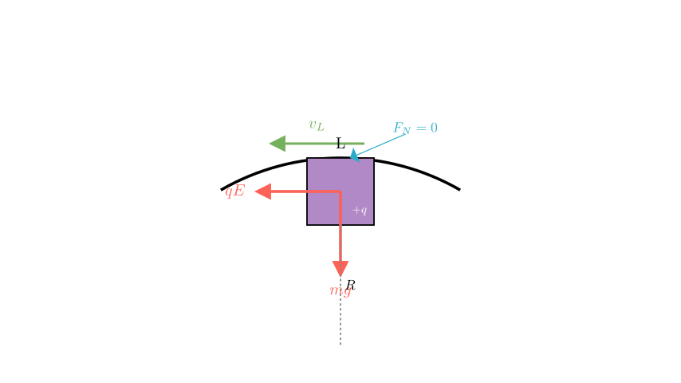
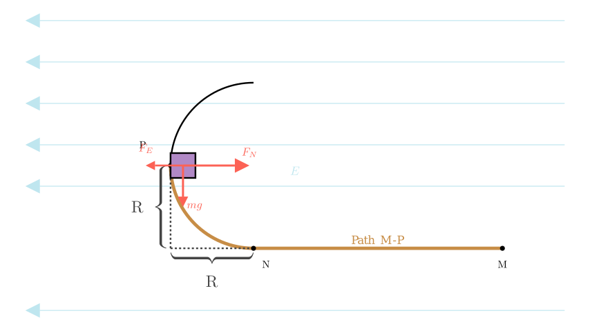
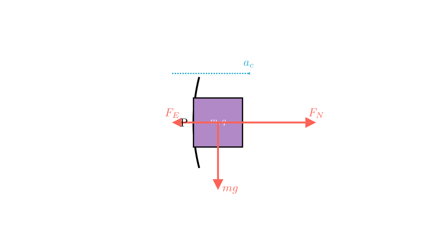

Problem Statement:
As shown in the figure, a small block of mass $m = 80\text{ g}$ carrying a positive charge $q = 2 \times 10^{-4}\text{ C}$ is placed at point $M$ on a horizontal track. The coefficient of sliding friction between the block and the horizontal track is $\mu = 0.2$. The track is located in a uniform electric field pointing horizontally to the left with magnitude $E = 10^{3}\text{ V/m}$. At the end of the horizontal track $N$, a smooth semi-circular track with radius $R = 40\text{ cm}$ is connected. Take $g = 10\text{ m/s}^{2}$.
Calculate: 1. To enable the small block to reach the highest point $L$ of the track, what is the minimum distance $S$ between $M$ and $N$? 2. If the block is released from the position calculated in (1), what is the pressure (force) exerted by the block on the track when it reaches point $P$ (the midpoint of the semi-circular track)?
Solution Approach: We will solve this using the Work-Energy Theorem and Newton's Second Law for circular motion. 1. First, we determine the critical velocity required at the top of the loop ($L$) to maintain contact. Then, we use energy conservation from start ($M$) to finish ($L$) to find the starting distance. 2. Second, we calculate the velocity at point $P$ using energy methods, then analyze the radial forces to find the normal force exerted by the track.

Part 1: Minimum Distance S
Step 1: Analyze the critical condition at the highest point L.
For the block to complete the circular loop and reach point $L$, it must maintain contact with the track. The critical limiting case occurs when the Normal Force ($F_N$) exerted by the track on the block becomes zero just as it passes point $L$.
At point $L$ (the top of the circle): - Gravity ($mg$) acts downwards. - The Electric Force ($qE$) acts horizontally to the left. - Since $F_E$ is horizontal, it is tangential to the circle at the top and does not contribute to the centripetal force. - The centripetal force is provided solely by gravity (and the normal force, if any).
The condition for minimum velocity $v_L$ is: $$mg = m \frac{v_L^2}{R}$$
Solving for $v_L^2$: $$v_L^2 = gR$$

Step 2: Apply the Work-Energy Theorem from M to L.
We track the energy change from the starting point $M$ to the top of the loop $L$.
Work-Energy Equation: $$W_{total} = \Delta K$$ $$(qE \cdot S) - (\mu mg \cdot S) - mg(2R) = \frac{1}{2}m v_L^2 - 0$$
Substituting $v_L^2 = gR$: $$(qE - \mu mg)S - 2mgR = \frac{1}{2}mgR$$ $$(qE - \mu mg)S = 2.5 mgR$$
Step 3: Calculate values. First, convert units to SI: - $m = 80\text{ g} = 0.08\text{ kg}$ - $R = 40\text{ cm} = 0.4\text{ m}$ - $q = 2 \times 10^{-4}\text{ C}$ - $E = 10^3\text{ V/m}$ - $\mu = 0.2$
Calculate Forces: - Electric Force $F_E = qE = (2 \times 10^{-4})(10^3) = 0.2\text{ N}$ - Weight $G = mg = 0.08 \times 10 = 0.8\text{ N}$ - Friction Force $f = \mu mg = 0.2 \times 0.8 = 0.16\text{ N}$
Substitute into the energy equation: $$(0.2 - 0.16)S = 2.5 \times 0.8 \times 0.4$$ $$0.04 S = 0.8$$ $$S = \frac{0.8}{0.04} = 20\text{ m}$$
Answer (1): The minimum distance is 20 m.

Part 2: Pressure on the track at point P
Step 1: Apply Work-Energy Theorem from M to P. Point $P$ is the midpoint of the semi-circle. - Vertical height at $P$: $h = R$. - Horizontal displacement from $N$ to $P$: $R$ (to the left).
Work done: 1. Friction (M to N): $W_f = -0.16 \times 20 = -3.2\text{ J}$. 2. Electric Force (M to P): The total horizontal displacement is $S + R$ (since $P$ is to the left of $N$). - $W_E = qE(S + R) = 0.2(20 + 0.4) = 0.2(20.4) = 4.08\text{ J}$. 3. Gravity (M to P): The block rises by $R$. - $W_g = -mgR = -0.8 \times 0.4 = -0.32\text{ J}$.
Kinetic Energy at P: $$\frac{1}{2} m v_P^2 = W_{total} = 4.08 - 3.2 - 0.32$$ $$\frac{1}{2} m v_P^2 = 0.56\text{ J}$$ $$v_P^2 = \frac{2 \times 0.56}{0.08} = \frac{1.12}{0.08} = 14\text{ (m/s)}^2$$
Step 2: Force Analysis at P. At point $P$ (vertical section of the track): - The track is vertical, so the Normal Force ($F_N$) points horizontally to the right (towards the center of the circle). - The Electric Force ($F_E = qE$) points horizontally to the left (outwards from the center). - Gravity ($mg$) points vertically downwards (tangential to the circle).
The centripetal force is the net force in the radial (horizontal) direction: $$F_{net_radial} = F_N - F_E = m \frac{v_P^2}{R}$$

Step 3: Calculate the Normal Force.
Rearranging the centripetal force equation: $$F_N = m \frac{v_P^2}{R} + F_E$$
Substitute the known values ($m=0.08$, $v_P^2=14$, $R=0.4$, $F_E=0.2$): $$F_N = 0.08 \left( \frac{14}{0.4} \right) + 0.2$$ $$F_N = 0.08 (35) + 0.2$$ $$F_N = 2.8 + 0.2$$ $$F_N = 3.0\text{ N}$$
Conclusion: The normal force exerted by the track on the block is $3.0\text{ N}$. According to Newton's Third Law, the pressure (force) exerted by the block on the track is equal in magnitude and opposite in direction.
Final Answers: 1. The minimum distance $S$ is 20 m. 2. The pressure on the track at point $P$ is 3.0 N.